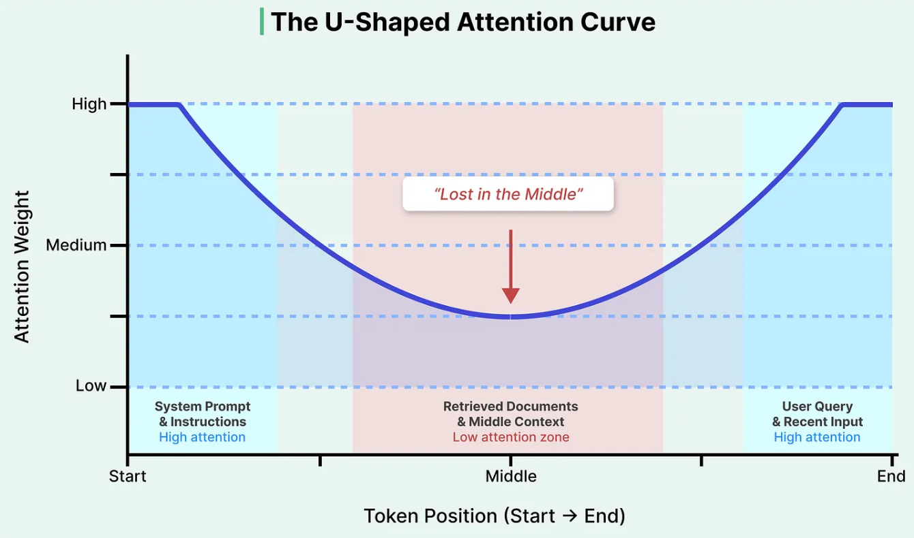
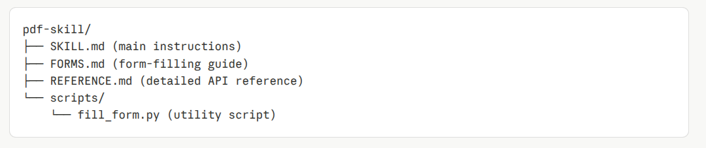
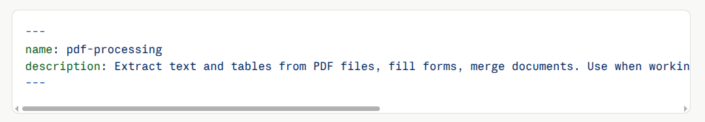

Adopting Agentic Coding
Moving beyond simple autocomplete to collaborative AI workflows.
Transitioning to Level 3 is where engineering discipline becomes essential.
Completion
Syntax auto-complete acting as a fast but simple helper.
Chat
Generating blocks of code with an advising AI peer.
Command
Modifying files & systems directly as a co-pilot driver.
Background
Running systemic asynchronous workflows at scale.
Distribute labor intelligently between focused human context and asynchronous agent runs.
Align on spec
business + dev + qa + AI interviewer
Slice the ticket
vertical slices, one per sub-ticket
Inner Dev Loop
fresh context, TDD red-green-refactor
Agentic QA
agent-browser drives the real UI
Review
dev reviews, qa does UAT
The rule of thumb: AFK handles the deterministic execution; HITL handles the ambiguity and taste.
The user's actual question is often a tiny fraction of the total token count.

The LLM pays less attention to the middle of long conversations.

Help your AI maintain sharp focus and completely avoid hallucinations.
Caveman
makes agent talk like caveman — keeps full technical accuracy. Brain still big. Mouth small.
Cutover
clears the context, when starting a new, unrelated task.
Compaction
Compressing large context into short concise summary notes.
Sidenotes
Documenting details inside ephemeral files instead of chat threads.
Divide cognitive labor between a central Orchestrator and specialized sub-agents.
Formal documents transfer strategic intent, rather than just acting as checklists.
"The true value of documentation isn't the artifact itself, but the speed at which it transfers understanding to another mind."
Skills: the ultimate combination of reusable workflows, context, and best practices.
Skill Structure

Skill Definition (SKILL.md)

An Agent is a non-deterministic Model bound by a deterministic Guides and Sensors.
Do not start from scratch; adopt highly mature, battle-tested workflows.
Frameworks & Methods
Structured system design architectures.
-
BMAD-METHOD
Specialized AI sub-agents and structured planning specs.
-
github/spec-kit
The blueprint toolkit for Spec-Driven Agentic Engineering.
Skill Sets
Reusable scripts that sub-agents call.
-
obra/superpowers
Composable agentic skill sets built for CLI deployment.
-
mattpocock/skills
Minimalist, hyper-focused blocks of programmatic execution.
Supercharged by AI, operations fast-track bottlenecks upward to coordination.
Flight Level 3: Strategy
Portfolio Management & Strategic Alignment
Flight Level 2: Coordination
End-to-End Value Stream & Team Interactions
(Product Approval, QA, Ops, Cross-team Dependencies)
Flight Level 1: Operational
Daily Team Execution & High-Speed Code Generation
Q&A
Thank you for attending.